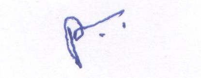

Premagar L. Gedam
from orange, complete info

| Born | Premsagar L. Gedam May 20, 1998(age 21),Chandrapur , Chandrapur |
| Education | Vidya Niketan High School |
| Occupation | Web Developer, Android Develper |
| Year Active | 2019 - Present |
| Parent(s) | Laxman Gedam Sunita Gedam |
|  |
Robert John Downey Jr. (born April 4, 1965)[1] is an American actor, producer, and singer. His career has been characterized by critical and popular success in his youth, followed by a period of substance abuse and legal troubles, before a resurgence of commercial success in middle age. In 2008, Downey was named by Time magazine among the 100 most influential people in the world,[2][3] and from 2013 to 2015, he was listed by Forbes as Hollywood's highest-paid actor.[2][4] His films have grossed over $14.4 billion worldwide,[5] making him the second highest-grossing box-office star of all time.
At the age of five, he made his acting debut in Robert Downey Sr.'s film Pound in 1970. He subsequently worked with the Brat Pack in the teen films Weird Science (1985) and Less Than Zero (1987). In 1992, Downey portrayed the title character in the biopic Chaplin, for which he was nominated for the Academy Award for Best Actor and won a BAFTA Award. Following a stint at the Corcoran Substance Abuse Treatment Facility on drug charges, he joined the TV series Ally McBeal, for which he won a Golden Globe Award; however in the wake of two drug charges, one in late 2000 and one in early 2001, he was fired and his character terminated. He stayed in a court-ordered drug treatment program shortly after and has maintained his sobriety since 2003.
Initially, bond completion companies would not insure Downey, until Mel Gibson paid the insurance bond for the 2003 film The Singing Detective.[7] He subsequently went on to star in the black comedy Kiss Kiss Bang Bang (2005), the thriller Zodiac (2007), and the action comedy Tropic Thunder (2008); for the latter he was nominated for an Academy Award for Best Supporting Actor. Downey gained wider recognition for starring as Tony Stark / Iron Man in ten films within the Marvel Cinematic Universe, beginning with Iron Man (2008). He has also played the title character in Guy Ritchie's Sherlock Holmes (2009), which earned him his second Golden Globe, and its sequel (2011).